My Projects
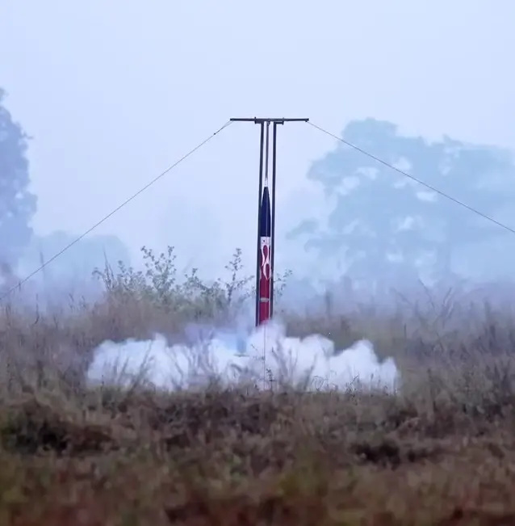
Project Trishul
Oct 2023 – Jan 2025Design, Fabrication, and Launch of a 3km Altitude-Class Rocket | Project Lead – Avionics & System Integration
- Developed custom avionics module using Teensy 4.1 with IMU, barometer, and RA-02 LoRa for real-time telemetry and data acquisition.
- Designed and verified dual-parachute deployment with altitude-decrement logic and timer redundancy via MOSFET actuation.
- Led system-level testing and launch reporting — national record 2682 m apogee for a student-built rocket in Nepal.
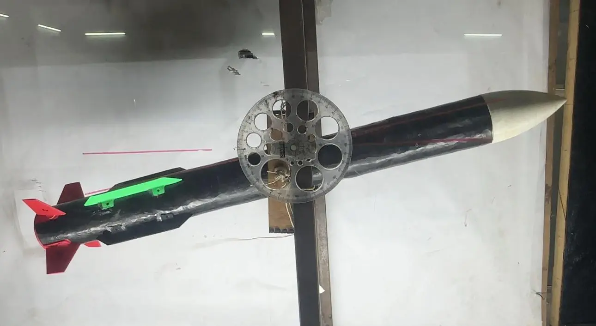
Project Vajra – Active Fin-Controlled Rocket
Mar 2024 – Feb 2025Integrated Control System for Rocket Attitude Stabilization | Final Year Project
- Designed and tuned PID flight control laws for pitch and roll axes in MATLAB/Simulink across varying aerodynamic conditions.
- Implemented in-flight attitude control using IMU-derived attitude and angular-rate feedback with servo-actuated fins.
- Validated closed-loop performance with flight-data simulation, wind-tunnel testing, and successful flight tests.
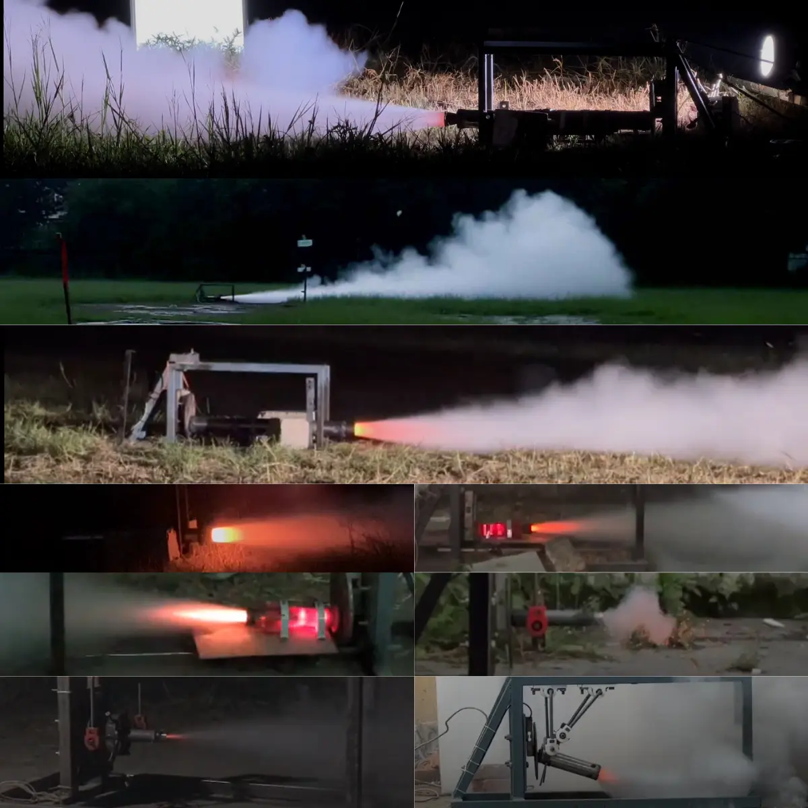
Solid Rocket Booster (SRB) – Team SRB
2021 – 2025Founding Member | Avionics, Recovery, Propulsion & System Integration
- Founding member specializing in vehicle integration and avionics — microcontroller programming, telemetry setup, and sensor testing.
- Hands-on across propulsion characterization, recovery, composite manufacturing, and machining; validated subsystems in static and flight tests.
- Led landmark Project Trishul within the team alongside Projects Barbarika and Vajra.
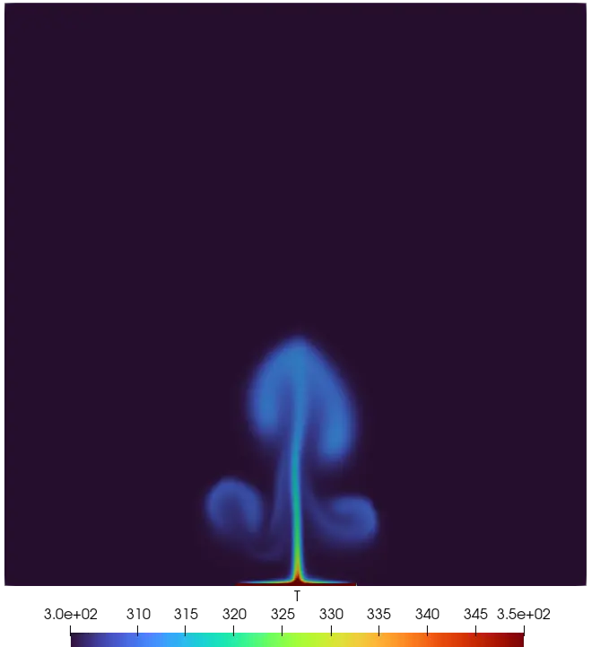
Natural Convection in a Closed Cavity
2023 – 2025CFD Case Study | OpenFOAM – buoyantPimpleFoam (Transient)
- Simulated transient natural convection in a closed cavity to assess gravity and heat-source effects on flow and temperature.
- Studied effect of heated-wall length on circulation and thermal stratification.
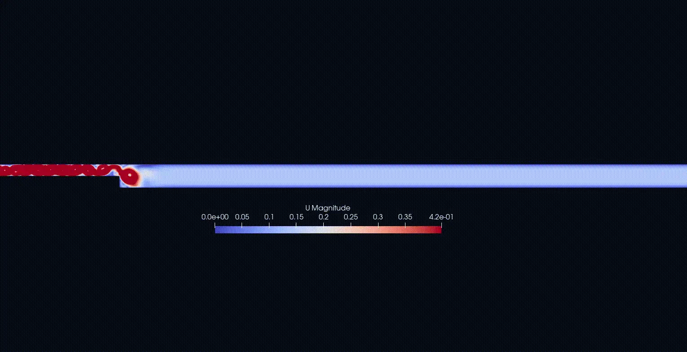
Flow Through Backward-Facing Step
2023 – 2025CFD Case Study | OpenFOAM – Transient + k-ε Turbulence
- Simulated laminar and turbulent flow over a backward-facing step with transient solvers.
- Compared reattachment lengths and assessed turbulence modelling with the k-ε model.

Thermal Stress Analysis in Cooling Glass Slab – PINN
Sep 2024 – Nov 2024AnK Internship | Physics-Informed Neural Networks – NVIDIA Modulus
- Programmed physics-informed models in Modulus to simulate transient heat transfer and thermal stress fields in 2D plates.
- Incorporated Neumann BCs via DiffusionInterface and animated time-evolution of temperature/stress.
- Validated PINN results against commercial solvers.
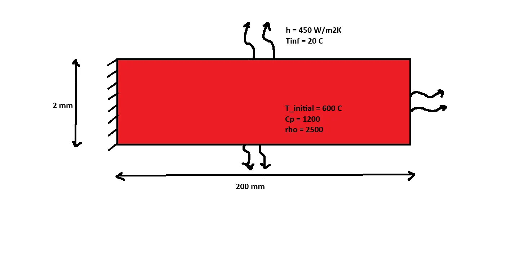
2D Cooling of Glass Slab – PINN
Sep 2024 – Nov 2024AnK Internship | Heat Diffusion with Convective Boundary Conditions
- Simulated natural cooling of a 2D glass slab with physics-informed models for transient heat diffusion.
- Added convective boundary conditions for the 2D diffusion problem — see blog post for details.
- Improved accuracy by enhancing simulations with validation data in Modulus Sym.
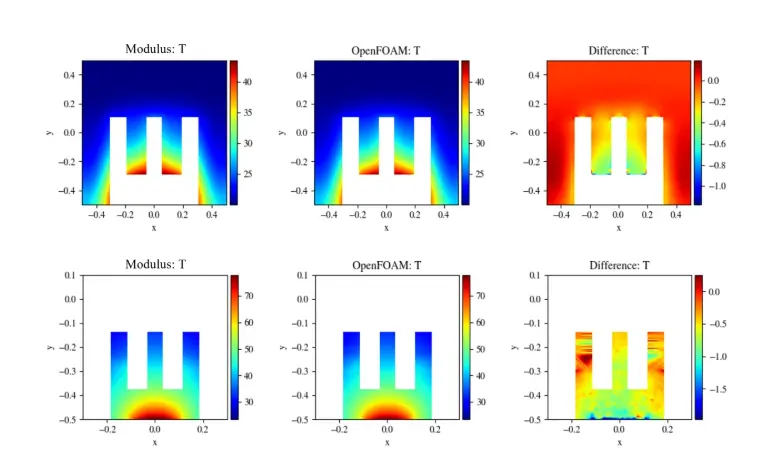
PINN Tutorials – NVIDIA Modulus
Sep 2024 – Nov 2024AnK Learning Track | CHT, Advection-Diffusion, Lid-Driven Cavity
- Ran official Modulus examples hands-on: 3D conjugate heat transfer, 2D advection-diffusion, lid-driven cavity, and 1D harmonic oscillator.
- Built foundations for internship work on thermal-stress PINNs.
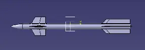
Sweep-Angle Effect on Canard Lift
2023 – 2025CFD Case Study | ANSYS Fluent
- Evaluated lift characteristics vs sweep angle for canard fins using ANSYS Fluent simulations.
- Compared aerodynamic efficiency across configurations for control-surface sizing.
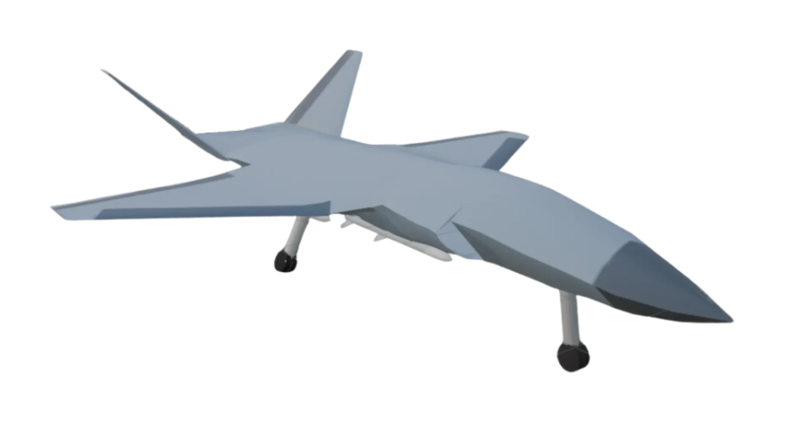
Flying Fox – The Loyal Wingman
2024Preliminary Design of an Unmanned Combat Aerial Vehicle (UCAV)
- Translated mission needs (payload, range, combat profile) into design constraints and propulsion considerations.
- Did aerodynamic sizing, lift-distribution, and V-tail / wing / fuselage trades; checked static and dynamic stability in X-Plane.
- Computed CG envelope, neutral point, and cruise / dash / loiter design points; built integrated CAD geometry.
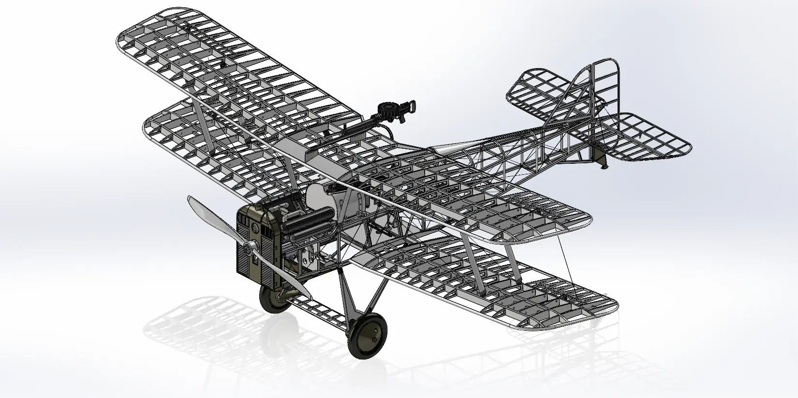
Aircraft Design & Manufacturing – Biplane
2024CAD of Biplane Structural Skeleton | Laser-Cut Model Build
- Designed detailed internal structures — ribs, spars, longerons — for biplane wings and fuselage.
- Fabricated model with laser-cut parts; studied structural integration and weight distribution.
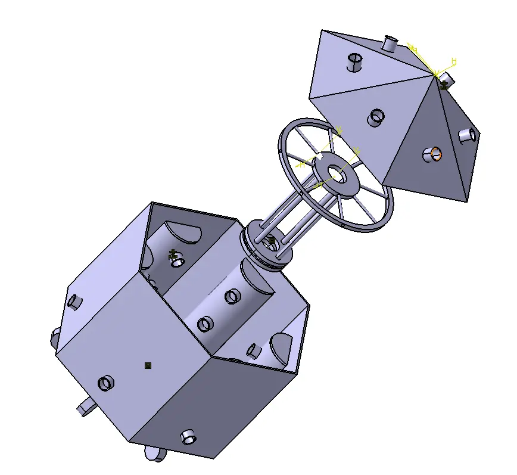
Cloth Drying Machine
Design and Fabrication of Cloth Drying Machine Model
- Design and fabrication of cloth drying machine model.
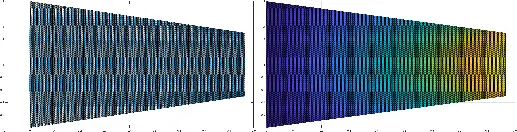
MATLAB Mesh Generation & Heat Solver
MATLAB Program for 2D Steady-State Heat Problems
- MATLAB program to generate mesh and solve 2D steady-state heat problems.
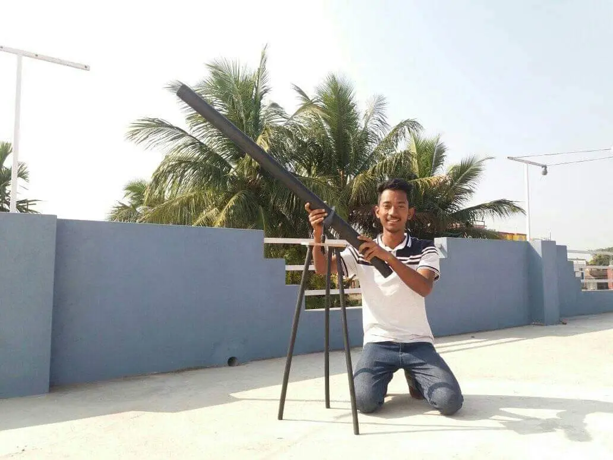
Homemade Telescope
20x Magnification Telescope from Local Materials | Astronomy Olympiad
- Manufactured homemade telescope with 20x magnification using locally available materials.
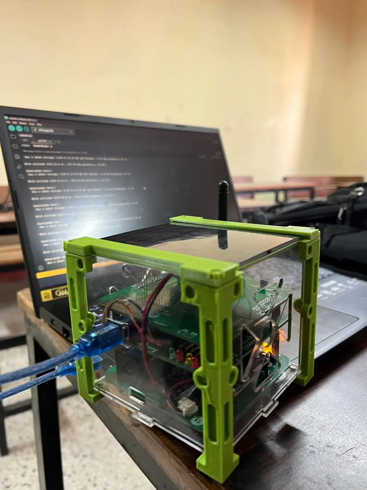
QuantaCube – 1U CubeSat
2024ORION Space Satellite Training | OBC, PMM & Long-Range Comms
- Analysed and assembled 1U CubeSat with long-range communication, power management, and on-board computer.
- Worked on telemetry testing, sensor integration, and system-level debugging for validation.
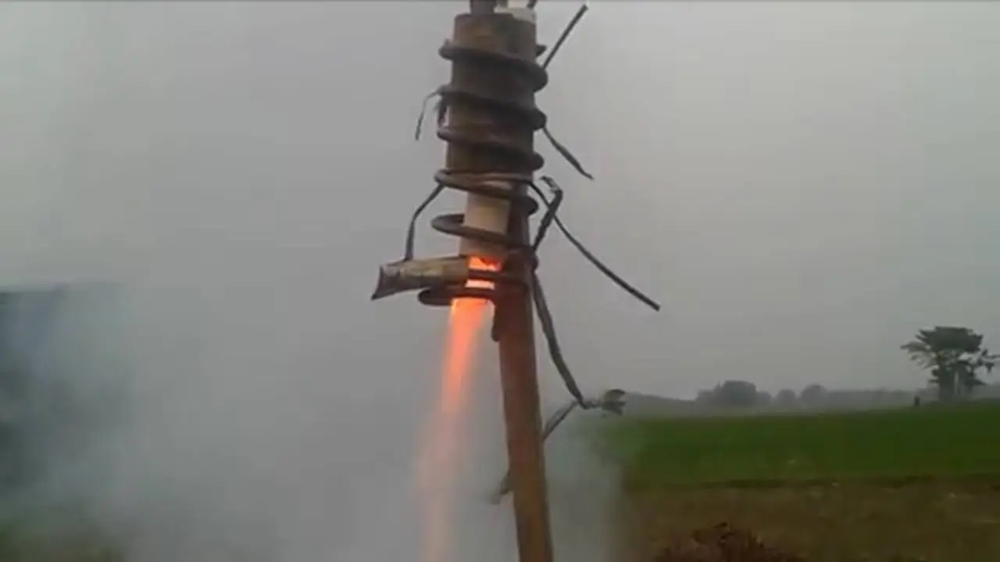
Hobby Rocket Motor
Sugar-Based A-Class Motor from Local Materials
- Development of sugar-based A-class motor with locally available material.
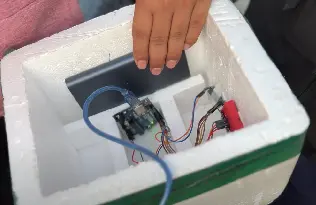
Project Aarohan: High-Altitude Balloon
Apr 2022 – IncompleteProject Co-Leader, SEDS Nepal | 14-Member Team | 30 km Target Probe
- Co-led design, assembly, and testing of a 2 kg probe meant to carry 3 student-built CubeSats to near-space.
- Contributed to electronics design, telemetry integration, sensor testing, and real-time data acquisition.